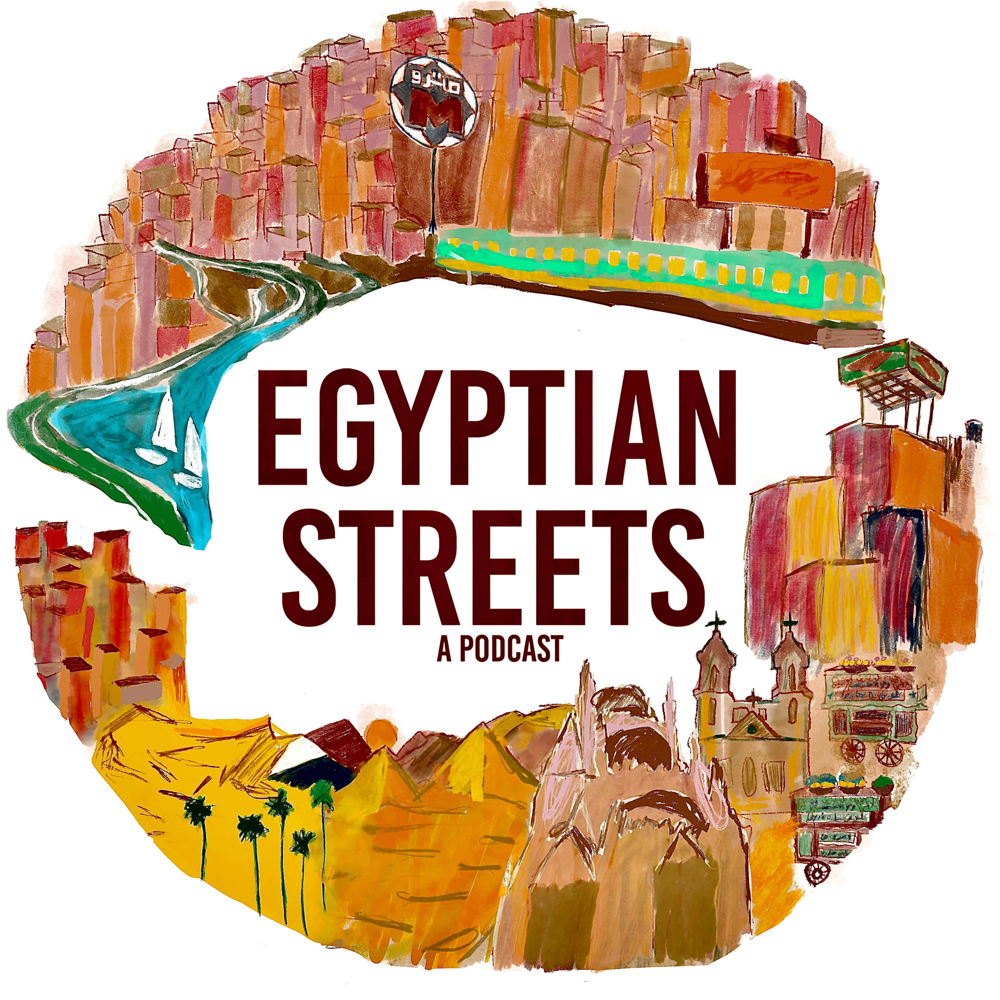

The Egyptian Streets Podcast
Featuring Egyptians around the world who fuel creative social change and their journeys that brought them there. From the intersection of Egyptian identity and creative social change: stories from street to sound.
Produced, hosted, and edited by Noran.
2020–2021
- Bassem Youssef — Reinvention, Political Satire and a Plant Based Diet
- Felukah — New York and Cairo, Storytelling, and Rap
- Rosaline Elbay — Ramy, British Theatre and Archaeology
- Deena Mohamed — Shubeik Lubeik, Qahira and Graphic Novels in Egypt
- Amir El-Masry — Limbo, Studying Criminology, and a British-Egyptian Identity
- Many more episodes
“The Egyptian Streets Podcast already had a successful first season, but season 2 attracted attention for its new theme” — AWIM News
“Multimedia journalist Noran Morsi produces the podcast of the news website Egyptian Streets, which features women from different backgrounds – from music, cinema, and graphic design to trans activism.” — Al Monitor
10 Lessons I Learned from Creating the Egyptian Streets Podcast